Basic Concepts in Geometry
Let's Learn
Betweenness
If P, Q, R are three distinct collinear points, there are three possibilities.
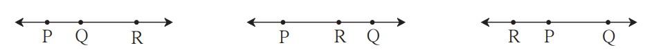
Practice set 1.1
1. Find the distances with the help of the number line given below. 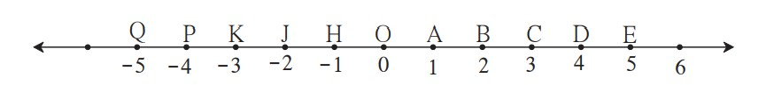i. d(B, E)
ii. d (J, J)
iii. d(P, C)
iv. d(J, H)
v. d(K, O)
vi. d(O, E)
vii. d(P, J)
viii. d(Q, B)
Solution :
i. Co-ordinate of the point B is 2.
Co-ordinate of the point E is 5.
Since, 5 > 2
∴ d(B, E) = 5 – 2
∴ d(B, E) = 3
ii. Co-ordinate of the point J is -2.
Co-ordinate of the point A is 1.
Since, 1 > -2
∴ d(J, A) = 1 – (-2)
= 1 + 2
∴ d(J, A) = 3
iii. Co-ordinate of the point P is -4.
Co-ordinate of the point C is 3.
Since, 3 > -4
∴ d(P,C) = 3 – (-4)
= 3 + 4
∴ d(P,C) = 7
iv. Co-ordinate of the point J is -2.
Co-ordinate of the point H is -1.
Since, -1 > -2
∴ d(J,H) = – 1 – (-2)
= -1 + 2
∴ d(J,H) = 1
v. Co-ordinate of the point K is -3.
Co-ordinate of the point O is 0.
Since,0 > -3
∴ d(K, O) = 0 – (-3)
= 0 + 3
∴ d(K, O) = 3
vi. Co-ordinate of the point O is 0.
∴ Co-ordinate of the point E is 5.
Since, 5 > 0
∴ d(O, E) = 5 – 0
∴ d(O, E) = 5
vii. Co-ordinate of the point P is -4.
Co-ordinate of the point J is -2.
Since -2 > -4
∴ d(P, J) = -2 – (-4)
= – 2+ 4
∴ d(P, J) = 2
viii. Co-ordinate of the point Q is -5.
Co-ordinate of the point B is 2.
Since,2 > -5
∴ d(Q,B) = 2 – (-5)
= 2 + 5
∴ d(Q, B) = 7
2. If the co-ordinate of A is x and that of B is y, find d(A, B) .
i. x = 1, y = 7
ii. x = 6, y = -2
iii. x = -3, y = 7
iv. x = -4, y = -5
v. x = -3, y = -6
vi. x = 4, y = -8
Solution :
i. Co-ordinate of point A is x = 1.
Co-ordinate of point B is y = 7
Since, 7 > 1
∴ d(A, B) = 7 – 1
∴ d(A, B) = 6
ii. Co-ordinate of point A is x = 6.
Co-ordinate of point B is y = -2.
Since, 6 > -2
∴ d(A, B) = 6 – ( -2) = 6 + 2
∴ d(A, B) = 8
iii. Co-ordinate of point A is x = -3.
Co-ordinate of point B is y = 7.
Since, 7 > -3
∴ d(A, B) = 7 – (-3) = 7 + 3
∴ d(A, B) = 10
iv. Co-ordinate of point A is x = -4.
Co-ordinate of point B is y = -5.
Since, -4 > -5
∴ d(A, B) = -4 – (-5)
= -4 + 5
∴ d(A, B) = 1
v. Co-ordinate of point A is x =-3.
Co-ordinate of point B is y = -6.
Since, -3 > -6
∴ d(A, B) = -3 – (-6)
= -3 + 6
∴ d(A, B) = 3
vi. Co-ordinate of point A is x = 4.
Co-ordinate of point B is y = -8.
Since, 4 > -8
∴ d(A, B) = 4 – (-8)
= 4 + 8
∴d(A, B) = 12
3. From the information given below, find which of the point is between the other two.
If the points are not collinear, state so.
i. d(P, R) = 7, d(P, Q) = 10, d(Q, R) = 3
ii. d(R, S) = 8, d(S, T) = 6, d(R, T) = 4
iii. d(A, B) = 16, d(C, A) = 9, d(B, C) = 7
iv. d(L, M) =11, d(M, N) = 12, d(N, L) = 8
v. d(X, Y) = 15, d(Y, Z) = 7, d(X, Z) = 8
vi. d(D, E) = 5, d(E, F) = 8, d(D, F) = 6
Solution :
i. Given, d(P, R) = 7, d(P, Q) = 10, d(Q, R) = 3
d(P, Q) = 10 …(i)
d(P, R) + d(Q, R) = 7 + 3 = 10 .. .(ii)
∴ d(P, Q) = d(P, R) + d(Q, R) …[From (i) and (ii)]
∴ Point R is between the points P and Q
i. e., P – R – Q or Q – R – P.
∴ Points P, R, Q are collinear.
ii. Given, d(R, S) = 8, d(S, T) = 6, d(R, T) = 4
d(R, S) = 8 …(i)
d(S, T) + d(R, T) = 6 + 4 = 10 …(h)
∴ d(R, S) ≠ d(S, T) + d(R, T) … [From (i) and (ii)]
∴ The given points are not collinear.
iii. Given, d(A, B) = 16, d(C, A) = 9, d(B, C) = 7
d(A, B) = 16 …(i)
d(C, A) + d(B, C) = 9 + 7 = 16 …(ii)
∴ d(A, B) = d(C, A) + d(B, C) …[From(i) and (ii)]
∴ Point C is between the points A and B.
i. e., A – C – B or B – C – A.
∴ Points A, C, B are collinear
iv. Given, d(L, M) = 11, d(M, N) = 12, d(N, L) = 8
d(M, N) = 12 …(i)
d(L, M) + d(N, L) = 11 + 8 = 19 …(ii)
∴d(M, N) + d(L, M) + d(N, L) … [From (i) and (ii)]
∴ The given points are not collinear.
v. Given, d(X, Y) = 15, d(Y, Z) = 7, d(X, Z) = 8
d(X, Y) = 15 …(i)
d(X,Z) + d(Y, Z) = 8 + 7= 15 …(ii)
∴ d(X, Y) = d(X, Z) + d(Y, Z) …[From (i) and (ii)]
∴ Point Z is between the points X and Y
i. e.,X – Z – Y or Y – Z – X.
∴ Points X, Z, Y are collinear.
vi. Given, d(D, E) = 5, d(E, F) = 8, d(D, F) = 6
d(E, F) = 8 …(i)
d(D, E) + d(D, F) = 5 + 6 = 11 …(ii)
∴ d(E, F) ≠ d(D, E) + d(D, F) … [From (i) and (ii)]
∴ The given points are not collinear.
4. On a number line, points A, B and C are such that d(A, C) = 10, d(C, B) = 8. Find d(A, B) considering all possibilities.
Soltuion :
Given, d(A, C) = 10, d(C, B) = 8.
Case I: Points A, B, C are such that, A – B – C.
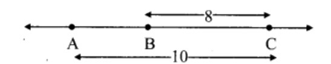
∴ d(A, C) = d(A, B) + d(B, C)
∴ 10 = d(A, B) + 8
∴ d(A, B) = 10 – 8
∴ d(A, B) = 2
Case II: Points A, B, C are such that, A – C – B.
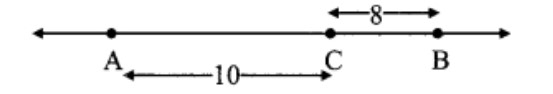
∴ d(A, B) = d(A, C) + d(C, B)
= 10 + 8
∴ d(A, B) = 18
Case III: Points A, B, C are such that, B – A – C.
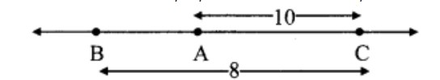
From the diagram,
d (A, C) > d(B, C)
Which is not possible
∴ Point A is not between B and C.
∴ d(A, B) = 2 or d(A, B) = 18.
5. Points X, Y, Z are collinear such that d(X, Y) = 17, d(Y, Z) = 8, find d(X, Z).
Solution :
Given,d(X, Y) = 17, d(Y, Z) = 8
Case I: Points X, Y, Z are such that, X – Y – Z.
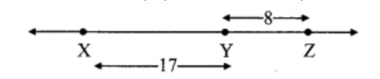
∴ d(X, Z) = d(X, Y) + d(Y, Z)
= 17 + 8
∴ d(X, Z) = 25
Case II: Points X, Y, Z are such that, X – Z – Y.
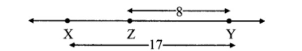
∴ d(X,Y) = d(X,Z) + d(Z,Y)
∴ 17 = d(X, Z) + 8
∴ d(X, Z) = 17 – 8
∴ d(X, Z) = 9
Case III: Points X, Y, Z are such that, Z – X – Y.
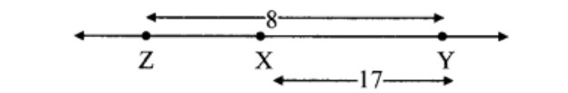
From the diagram,
d(X, Y) > d (Y, Z)
Which is not possible
∴ Point X is not between Z and Y.
∴ d(X, Z) = 25 or d(X, Z) = 9.
6. Sketch proper figure and write the answers of the following questions.
i. If A – B – C and l(AC) = 11,
l(BC) = 6.5, then l(AB) = ?
ii. If R – S – T and l(ST) = 3.7,
l(RS) = 2.5, then l(RT) = ?
iii. If X – Y – Z and l(XZ) = 3√7,
l(XY) = √7, then l(YZ) = ?
Soltuion :
i. Given, l(AC) =11, l(BC) = 6.5
l(AC) = l(AB) + l(BC) … [A – B – C]
∴ 11= l(AB) + 6.5
∴ l(AB) = 11 – 6.5
∴ l(AB) = 4.5
ii. Given, l(ST) = 3.7, l(RS) = 2.5
l(RT) = l(RS) + l(ST) … [R – S – T]
= 2.5 + 3.7
∴ (RT) = 6.2
iii. l(XZ) = 3√7 , l(XY) = √7,
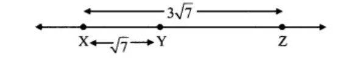
l(XZ) = l(X Y) + l(YZ) … [X – Y – Z]
∴ 3 √7 ⇒ √7 + l(YZ)
∴ l(YZ)= 3√7 – √7
∴ l(YZ) = 2 √7
Practice set 1.2
1. The following table shows points on a number line and their co-ordinates. Decide whether the pair of segments given below the table are congruent or not. 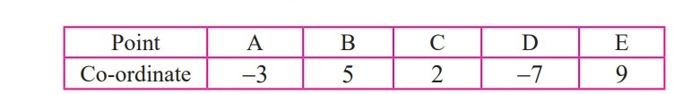
i. seg DE and seg AB
ii. seg BC and seg AD
iii. seg BE and seg AD
Solution :
i. Co-ordinate of the point E is 9.
Co-ordinate of the point D is -7.
Since, 9 > -7
∴ d(D, E) = 9 – (-7) = 9 + 7 = 16
∴ l(DE) = 16 …(i)
Co-ordinate of the point A is -3.
Co-ordinate of the point B is 5.
Since, 5 > -3
∴ d(A, B) = 5 – (-3) = 5 + 3 = 8
∴ l(AB) = 8 …(ii)
∴ l(DE) ≠ l(AB) …[From (i) and (ii)]
∴ seg DE and seg AB are not congruent.
ii. Co-ordinate of the point B is 5.
Co-ordinate of the point C is 2.
Since, 5 > 2
∴ d(B, C) = 5 – 2 = 3
∴ l(BC) = 3 …(i)
Co-ordinate of the point A is -3.
Co-ordinate of the point D is -7.
Since, -3 > -7
∴ d(A, D) = -3 – (-7) = -3 + 7 = 4
∴ l(AD) = 4 . ..(ii)
∴ l(BC) ≠ l(AD) … [From (i) and (ii)]
∴ seg BC and seg AD are not congruent.
iii. Co-ordinate of the point E is 9.
Co-ordinate of the point B is 5.
Since, 9 > 5
∴ d(B, E) = 9 – 5 = 4
∴ l(BE) = 4 …(i)
Co-ordinate of the point A is -3.
Co-ordinate of the point D is -7.
Since, -3 > -7
∴ d(A, D) = -3 – (-7) = 4
∴ l(AD) = 4 …(ii)
∴ l(BE) =l(AD) …[From (i) and (ii)]
∴ seg BE and seg AD are congruent.
i.e, seg BE ≅ seg AD
2.
Point M is the midpoint of seg AB. If AB = 8, then find the length of AM.
Solution :
Point M is the midpoint of seg AB and l(AB) = 8. …[Given]
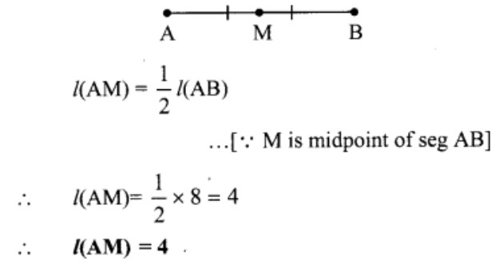
3.
Point P is the midpoint of seg CD. If CP = 2.5, find l(CD).
Solution :
Point P is the midpoint of seg CD and l(CP) = 2.5 …[Given]
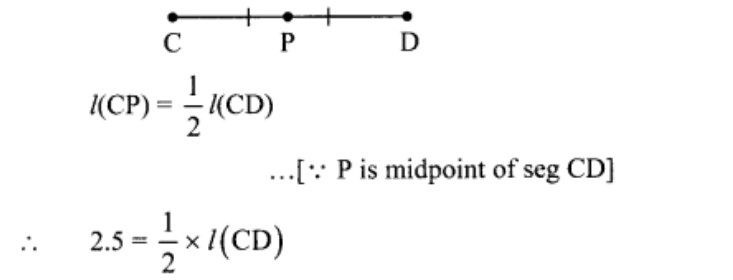
∴ l(CD) = 2.5 x 2
∴ l(CD) = 5
4.
If AB = 5 cm, BP = 2 cm and AP = 3.4 cm, compare the segments.
Solution :
Given, l(AB) = 5 cm, l(BP) = 2 cm,
l(AP) = 3.4 cm … [Given]
r Since, 2 < 3.4 < 5
∴ l(BP) < l(AP) < l(AB)
i.e., seg BP < seg AP < seg AB
5.
Write the answers to the following questions with reference to the figure given below:
i. Write the name of the opposite ray of ray RP
ii. Write the intersection set of ray PQ and ray RP.
iii. Write the union set of ray PQ and ray QR.
iv. State the rays of which seg QR is a subset.
v. Write the pair of opposite rays with common end point R.
vi. Write any two rays with common end point S.
vii. Write the intersection set of ray SP and ray ST.
Answer:
i. Ray RS or ray RT
ii. Ray PQ
iii. Line QR
iv. Ray QR, ray QS, ray QT, ray RQ, ray SQ, ray TQ
v. Ray RP and ray RS, ray RQ and ray RT vi. Ray ST, ray SR
vii. Point S
6. Answer the questions with the help of figure given below.
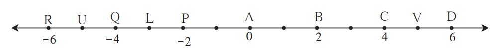
i. State the points which are equidistant from point B.
ii. Write a pair of points equidistant from point iii. Find d(U,V), d(P,C), d(V,B), d(U, L).
Answer :
i. Points equidistant from point B are a. A and C, because d(B, A) = d(B, C) = 2 b. D and P,
because d(B, D) = d(B, P) = 4
ii. Points equidistant from point Q are a. L and U, because d(Q, L) = d(Q, U) = 1 b. P and R,
because d(P, Q) = d(Q, R) = 2
iii. a. Co-ordinate of the point U is -5. Co-ordinate of the point V is 5. Since, 5 > -5
∴ d(U, V) = 5 – (-5)
= 5 + 5
∴ d(U, V) = 10
b. Co-ordinate of the point P is -2.
Co-ordinate of the point C is 4.
Since, 4 > -2
∴ d(P, C) = 4 – (-2)
= 4 + 2
∴ d(P, C) = 6
c. Co-ordinate of the point V is 5.
Co-ordinate of the point B is 2.
Since, 5 > 2
∴ d(V, B) = 5 – 2
∴ d(V, B) = 3
d. Co-ordinate of the point U is -5.
Co-ordinate of the point L is -3.
Since, -3 > -5
∴ d(U, L) = -3 – (-5)
= -3 + 5
∴ d(U, L) = 2
Practice set 1.3
1. Write the following statements in ‘if-then’ form.
i. The opposite angles of a parallelogram are congruent.
ii. The diagonals of a rectangle are congruent.
iii. In an isosceles triangle, the segment joining the vertex and the midpoint of the base is perpendicular to the base.
Answer :
i. If a quadrilateral is a parallelogram, then its opposite angles are congruent.
ii. If a quadrilateral is a rectangle, then its diagonals are congruent.
iii. If a triangle is isosceles triangle, then segment joining the vertex of a triangle and midpoint of the base is perpendicular to the base.
2.
Write converses of the following statements.
i. The alternate angles formed by two parallel lines and their transversal are congruent.
ii. If a pair of the interior angles made by a transversal of two lines are supplementary, then the lines are parallel.
iii. The diagonals of a rectangle are congruent.
Answer :
i. If the alternate angles made by two lines and their transversal are congruent, then the two lines are parallel.
ii. If two parallel lines are intersected by a transversal, then the interior angles formed bv the transversal are supplementary.
iii. If the diagonals of a quadrilateral are congruent, then that quadrilateral is a rectangle.